Defender
Tembok tim yang melindungi teman dari damage. HP paling tinggi, MP lebih sedikit.
♥ HP 100◉ MP 50
XP progres individuGP saldo individu
SEBUAH CERITA TENTANG KITA
The Last Chapter.
Bukan tentang akhir dari semuanya.
Tapi tentang semua hal yang pernah terjadi di antaranya.
CHAPTER 01 THE BEGINNING
Di kelas ini, belajar Fundamental Programming nggak cuma soal duduk, nyatet, terus ngoding. Ada TeachQuest yang bikin tiap pertemuan punya tantangannya sendiri.
Jujur, Fundamental Programming TI B jadi salah satu matkul paling seru semester ini. Ide gamifikasinya datang dari Pak Darius: sebelum UTS kita belajar algoritma dan C++, setelah UTS lanjut ke Java. TI A dan TI B jadi dua kelas yang nyobain cara belajar ini.
Di balik TeachQuest, aku dan Moses sempat ngebut dua minggu buat setup semuanya sambil belajar sistemnya sampai paham. Lumayan banyak yang harus disiapin supaya quest-nya bisa jalan bareng materi di kelas.
Dari awal semester, kalian diminta untuk membuat kelompok yang terdiri dari 3-4 orang, yang kelompok ini menjadi tim kalian dari awal sampai akhir semester. Asik lihat tiap kelompok nyusun strategi sendiri buat ngelewatin quest—kadang serius banget, kadang ada aja dramanya.
Pokoknya, makasih udah ikut seru-seruan dan berjuang bareng selama satu semester ini. kami harap web iseng isengan ini bisa ngehibur kalian (pls bruh tidur 3 jam doang karena ngerjain ginian)
CHAPTER 02 TI B 26, APA ADANYA
TI B 26 itu kelas yang seru dan nggak pernah terasa sepi. Isinya macam-macam keunikan—banyak yang aktif jawab, aktif nanya, dan ikut bikin suasana kelas hidup.
Kelas yang sangat seru, semuanya punya keunikan masing masing, banyak banget yang aktif bertanya, dan aktif menjawab juga, ya iyalahhh "Kelas TI 26 paling pinter" -Bu Dyah. Kelasnya sangat sangat gacor
Di sisi lain, banyak yang masih nyaman bareng circle masing-masing. Masih dalam proses saling kenal, jadi obrolan dan kedekatan lintas kelompok mungkin belum terbentuk semua.
Beda circle, satu kelas. Semoga makin lama makin banyak cerita bareng.

CHAPTER 04 TEACHQUEST
TeachQuest mengubah beberapa aktivitas belajar Fundamental Programming jadi pengalaman ala RPG kelas. Kalian membentuk tim, memilih role, mengumpulkan XP, dan saling bantu menyelesaikan tantangan.
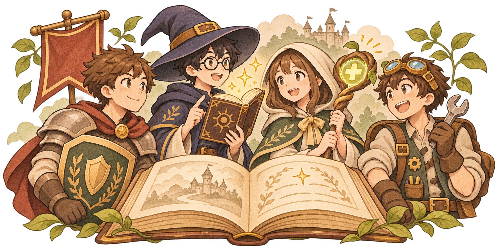
Pilih role dan bentuk tim berisi 3–4 orang. Ini contoh tim dengan empat role; tim berisi tiga orang tetap bisa memilih komposisi sendiri.
Tembok tim yang melindungi teman dari damage. HP paling tinggi, MP lebih sedikit.
Pengguna skill dengan MP paling banyak. Bisa membantu mengisi MP teman.
Penjaga tim yang memulihkan HP teman saat mulai rendah.
Support yang bisa memanipulasi input atau output untuk membantu diri sendiri dan tim.
Kumpulkan dari aktivitas positif dan quest. Setiap 1.000 XP naik level; XP juga bisa dikonversi jadi nilai tugas.
HP berkurang saat melanggar aturan kelas. Tidak ada regenerasi HP.
Dipakai untuk mengaktifkan skill sesuai role. Tiap class punya skill yang berbeda.
Gold untuk membeli item kosmetik dan potion. Biasanya didapat bersama reward XP.
CHAPTER 05 BLOOKET
Setiap minggu, kita akan bermain Blooket untuk mengulang dan menguji pemahaman materi Fundamental Programming dari minggu sebelumnya. Pertanyaan dan jenis game-nya berganti setiap minggu, jadi selalu ada tantangan baru.
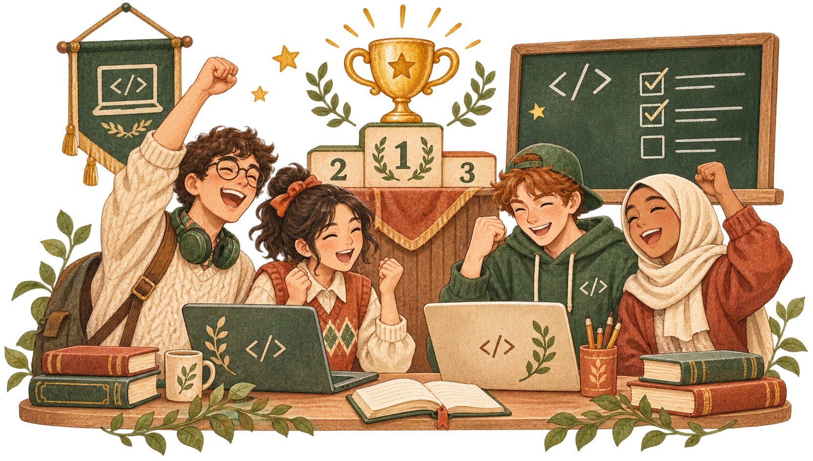
Format game dan kumpulan pertanyaan bisa berbeda di setiap sesi.
Setiap jawaban benar menambah 10 EXP.
Setiap jawaban salah mengurangi 1 HP.
Bonus tambahan untuk masing-masing mahasiswa yang meraih juara 1, 2, atau 3.
CHAPTER 04 QUEST BOARD
Latih kemampuan, kerja sama, dan kecepatan lewat tantangan Fundamental Programming berikut.
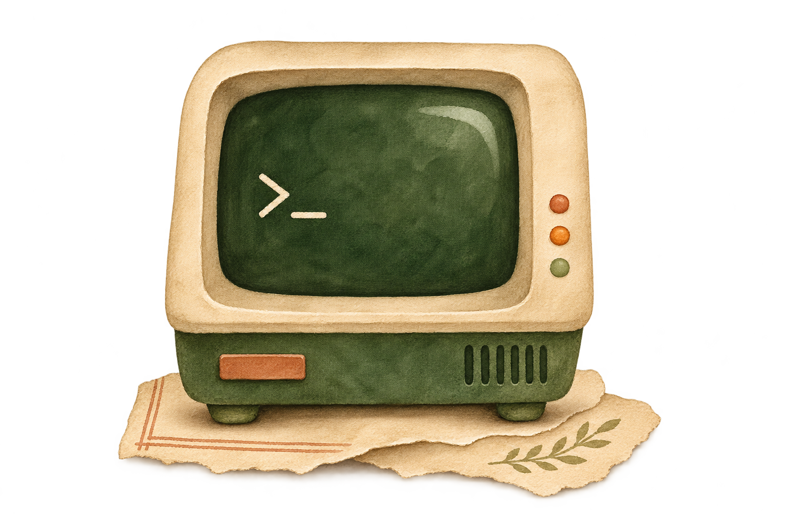
Latih kemampuan mengetik dengan membuat program C++ sepanjang dan sekreatif mungkin.
Buat program apa pun. Penilaian mempertimbangkan panjang program, kerapian kode, dan kreativitas. Kumpulkan file .cpp atau file teks .txt dengan membalas post quest ini.
Batas waktu: sebelum kelas offline hari ini dimulai. Reward ditentukan berdasarkan kriteria penilaian.
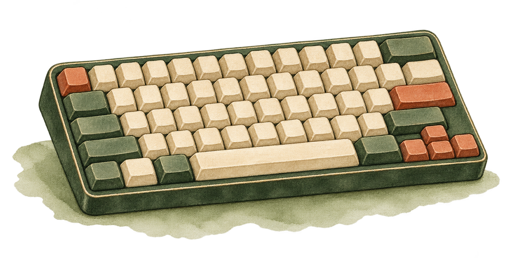
Satu kode panjang akan ditampilkan. Bentuk tim berisi 3–4 orang, susun strategi, lalu ketik seluruh kode secepat mungkin.
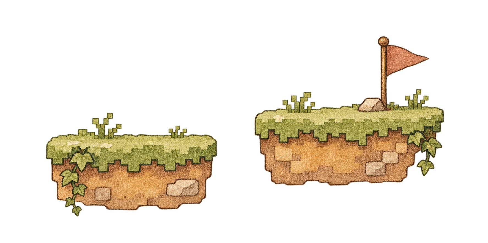
SpriteBox adalah game petualangan puzzle-platformer untuk belajar logika coding lewat urutan instruksi, parameter, loop, dan debugging. Beberapa puzzle beralih dari perintah berbasis ikon ke sintaks Swift.
Kenali SpriteBox di situs resmiLewat dari batas Common: tidak mendapatkan badge atau reward.
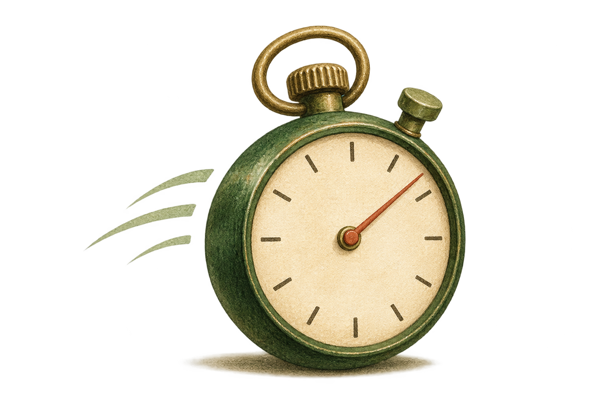
Buat program sesuai soal yang ditampilkan. Setiap mahasiswa mengerjakan secepat mungkin untuk mengumpulkan poin di setiap soal.
CHAPTER 05 SIDEQUEST BOARD
Latih logika, eksplorasi dunia hardware, dan lanjutkan belajar programming lewat empat sidequest pilihan.
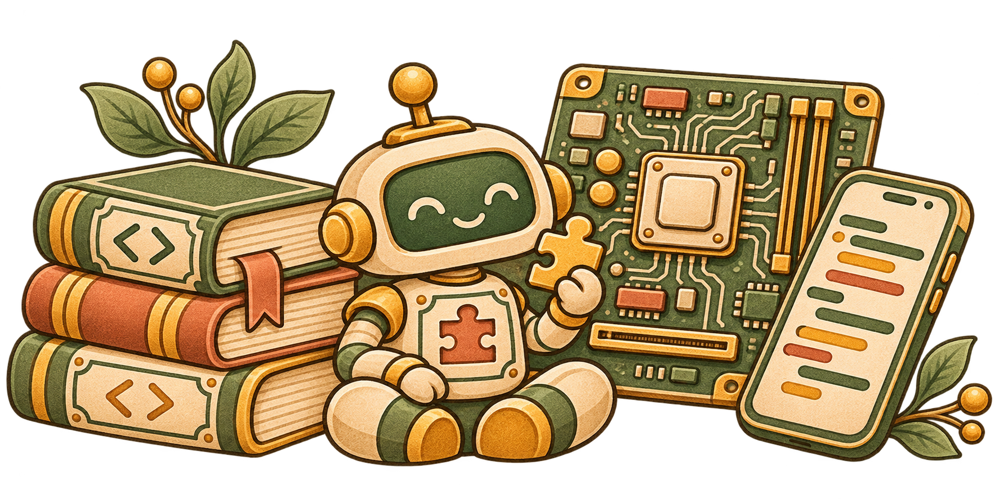
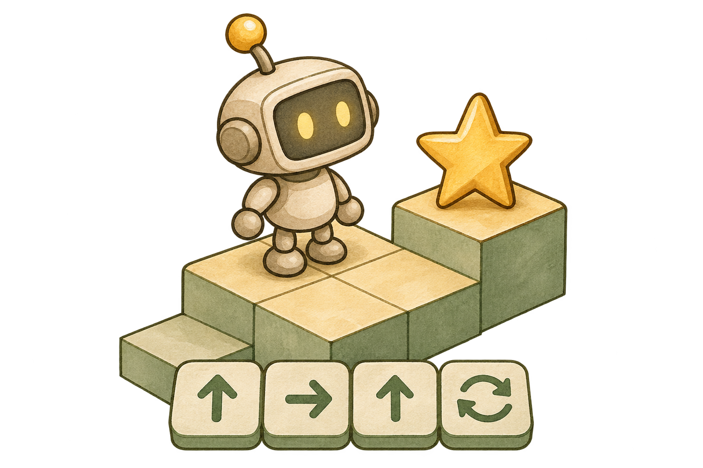
Lightbot adalah game untuk pembelajaran awal logika pemrograman. Semoga dengan bermain game ini, logika kalian lebih terlatih dan siap menerima pelajaran algoritma serta C++.
Termasuk bagian Challenge. Pastikan setiap level berhasil diselesaikan hingga mendapatkan star.
Post screenshot progress game dengan membalas postingan sidequest ini. Sertakan screenshot yang menunjukkan level selesai beserta star.
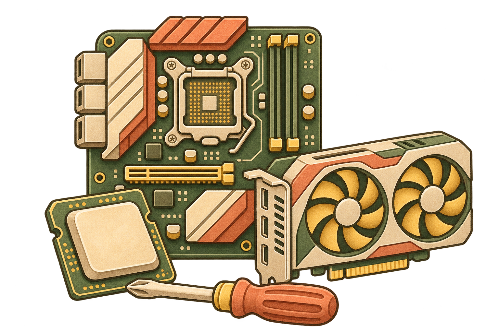
Kerjakan bagian ‘How To Build PC’ terlebih dahulu agar memahami mekanismenya. Setelah itu, mainkan Career sampai minimal 1 bulan in-game.
Post screenshot dengan membalas postingan ini. Screenshot harus menunjukkan kalian sudah menyelesaikan satu bulan permainan.
Jika mission yang selesai belum cukup, permainan bisa dilanjutkan ke bulan berikutnya in-game.
Kerjakan kuis pada setiap section di Academy Oracle. Setiap kuis dengan skor di atas 70 mendapatkan reward 100 XP.
Jika lupa password, gunakan FORGOT PASSWORD. Jika belum bisa mengakses kurikulum di web tersebut, silakan lapor kepada asdos.
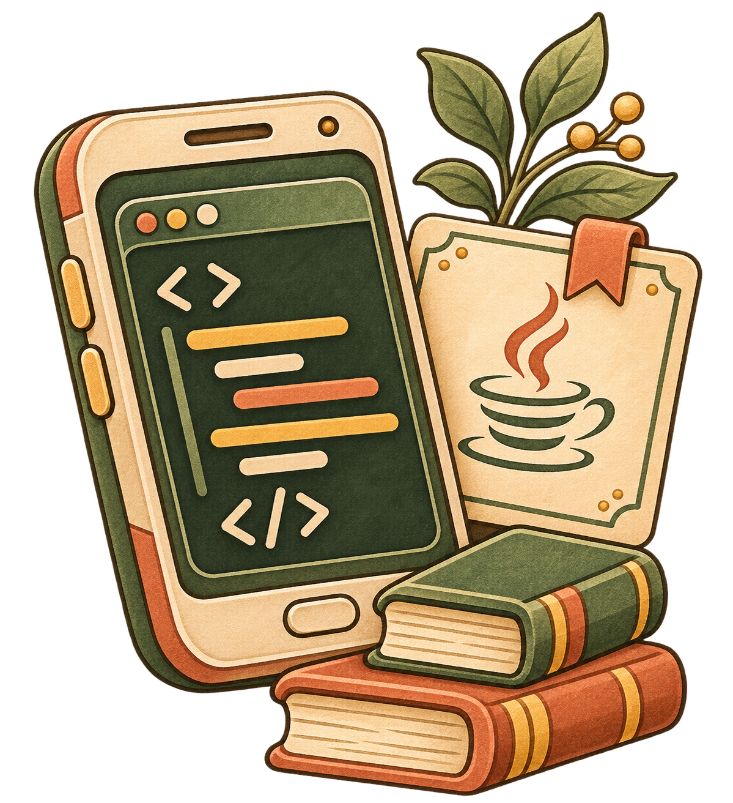
SoloLearn adalah aplikasi belajar programming untuk perangkat mobile, sehingga kalian bisa belajar programming on the go. SoloLearn tersedia di Play Store, App Store, dan web.
Materi sebelum dua bagian Java Intermediate tersebut merupakan materi pemrograman dasar dan lanjut yang sudah dipelajari di C++ Dasar dan Lanjut.
Setelah kedua section selesai, post screenshot sebagai bukti.
CHAPTER 06 CURSE BOARD
Dalam aturan TeachQuest, mahasiswa yang HP-nya habis akan mati dan dihidupkan kembali dengan 1 HP, tetapi harus menyelesaikan curse yang diterima.
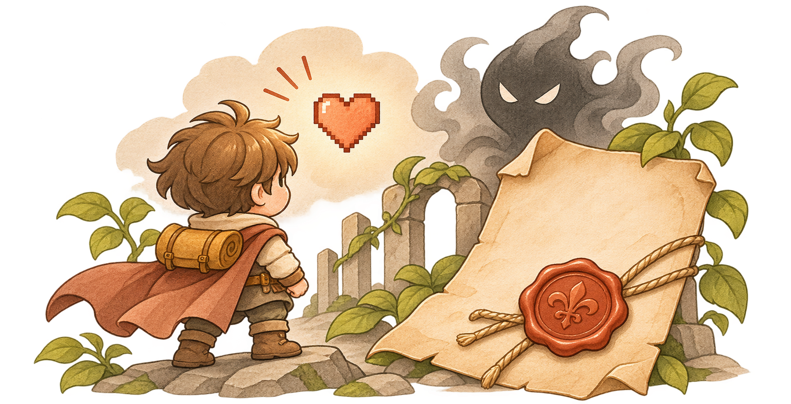
Menulis surat tertulis pengakuan dosa terkait nilai UTS yang didapatkan pada mata kuliah ini ke Kepala Program Studi / Kaprodi (Bu Lely).
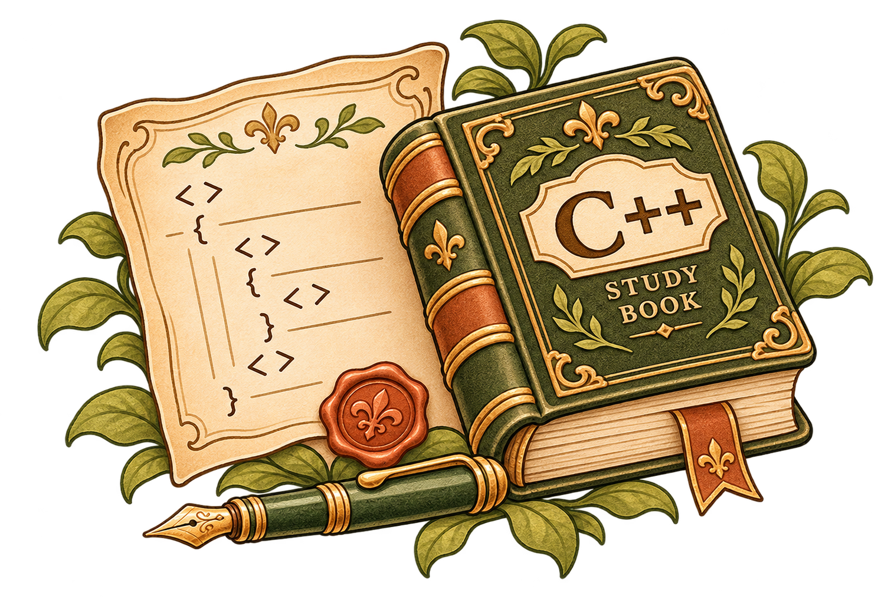
Mengerjakan SoloLearn C++ Intro & Intermediate.
Membantu pekerjaan kebutuhan dosen. Untuk ini silakan contact AMITA RATU OSSWALD via Teams.
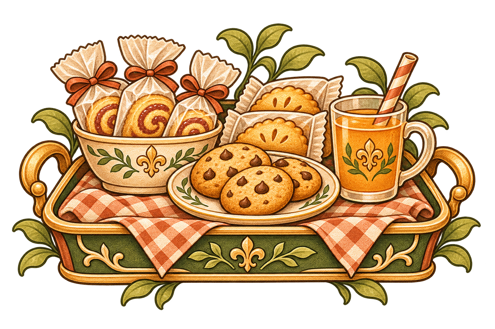
Membawa snack untuk satu kelas untuk pertemuan selanjutnya.
CHAPTER 05 FUNDAMENTAL CONCEPTS
Belajar pemrograman dimulai dari memahami masalah, merancang langkah penyelesaian, lalu menerjemahkannya menjadi instruksi yang terstruktur.
Sedikit demi sedikit, logika berubah menjadi solusi.
Menyusun langkah penyelesaian masalah secara runtut.
Bahasa pemrograman untuk menerjemahkan algoritma menjadi instruksi yang bisa dijalankan.
Bahasa pemrograman yang digunakan untuk membangun berbagai aplikasi.
Pendekatan pemrograman yang menyusun kode menggunakan objek dan kelas.
Mengenal konsep pemrograman melalui cerita dan animasi interaktif.
Belajar Java dengan membuat simulasi dan permainan interaktif.
Setelah logika dan instruksi tersusun, program dijalankan dan diperiksa untuk memastikan hasilnya sesuai harapan.
CHAPTER 06 THE PEOPLE BEHIND THE CLASS
Sebuah kelas juga dibentuk oleh orang-orang yang hadir di dalamnya—yang mengajar, membantu, bertanya, mencoba, dan ikut meramaikan suasana.
Dosen Pengampu — Fundamental Programming
GJ2627 · TK13028 · TI B 26Di kelas, peran asisten dosen bukan cuma menyampaikan materi. Ada error yang perlu dibantu cari solusinya, pertanyaan yang masuk lewat chat, instruksi praktikum yang perlu dipastikan, dan banyak hal kecil yang membuat proses belajar tetap berjalan.
CHAPTER 07 THE ROLL CALL
Sebelum halaman ini ditutup, mari sebut satu per satu orang yang menjadi bagian dari cerita ini.
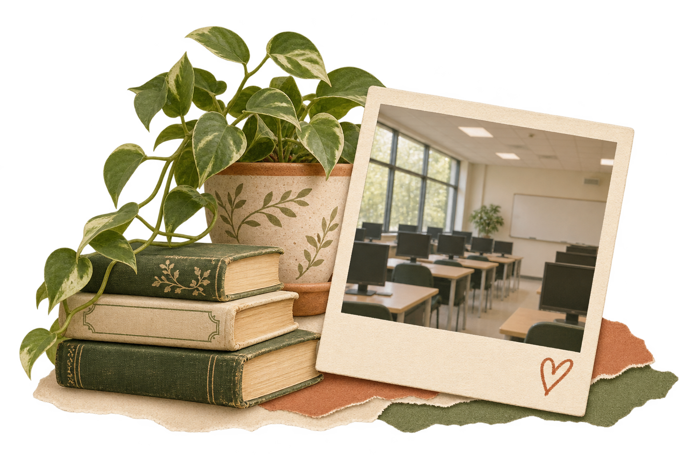
TI B 26 ♡CHAPTER 09 FROM MOSES
Satu ruang untuk pesan dan kenangan Moses bersama kelas.
CHAPTER 10 FROM FRANCESCO
Satu ruang untuk pesan yang ingin Francesco sampaikan langsung kepada kelas.
CHAPTER 12 KEEP IN TOUCH
Kalau mau tetap terhubung setelah kelas ini, kamu bisa menyapa Francesco di Instagram. Sampai ketemu di cerita berikutnya.
ONE LAST THING BEFORE WE GO
Semua cerita tadi punya satu kesamaan: ada orang-orang yang menjalaninya bersama.